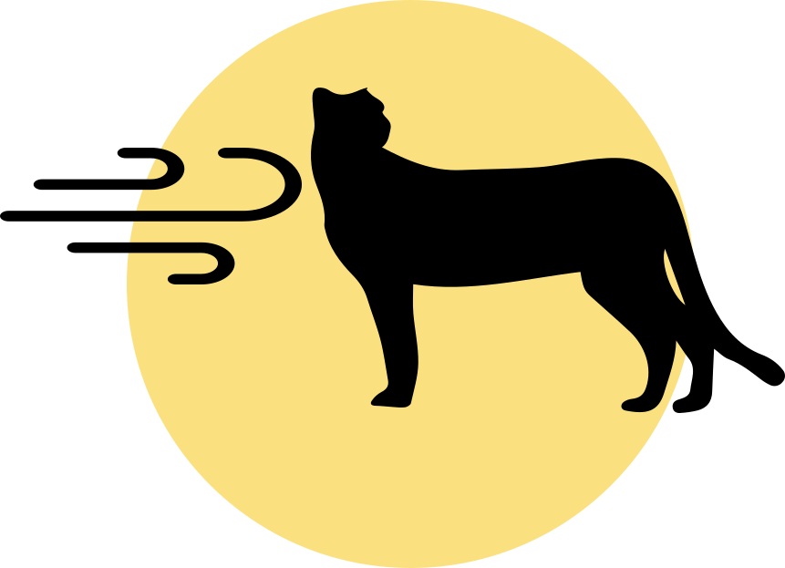
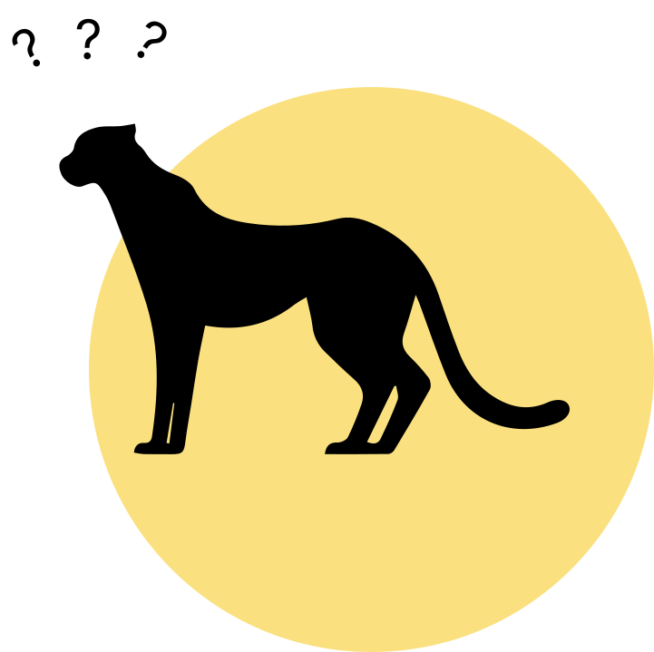
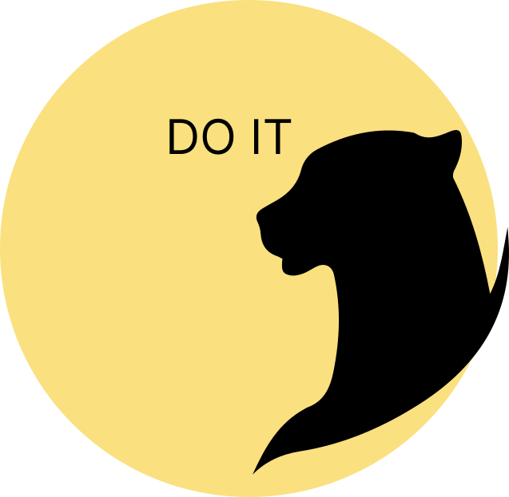
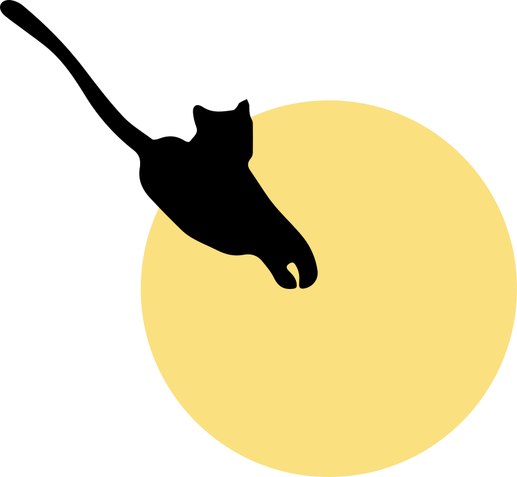

ПРИВЕТ

Учить иностранный язык (в том числе и английский) - легко Да-да, именно так, и сейчас я это докажу. Всё что вам нужно знать о самом процессе его изучения - это его этапы, а именно:
1
Взять старт. Подготовиться как и физически, так и морально.
2
Начать забег. Направьте всю свою мотивацию в иностранное “погружение”
3
Покорять вершины. Результаты соблюдения первых двух шагов не заставят себя ждать. Ваши старания обязательно окупятся со временем.
4
Преодолевать “бурю”. К несчастью, есть и моменты не из приятных, но необходимых для достижения заветной цели
5
Перескочить на очередную цель. Азарт может быть столь велик, что вам не захочется останавливаться лишь на единичной победе.
6
Следить за своей скоростью. Не всегда стоит безраздумно нестись вперёд, человек - живое существо, которое может уставать, или вовсе выгореть при отсутствии самоконтроля
7
Не забывать отдыхать. Какой бы не была прекрасной учёба, а брать перерывы в ней - это очень важно.
8
Но не отвлекаться во время учебного процесса. Постарайтесь избавиться ото всех внешних отвлекающих факторов на время, как вам предстоит “войти в поток”.
9
Помогать другим. Вы можете знать то, чего могут не знать другие люди, так и наоборот. Пользуйтесь данной возможностью, в будущем себе скажете спасибо.
О сайте
Данный сайт предназначен для максимального быстрого и, одновременно эффективного, изучения основ английской грамматики
